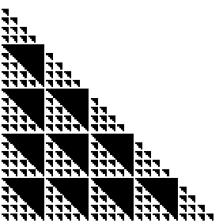
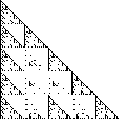
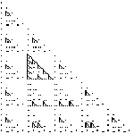
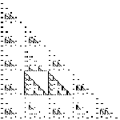
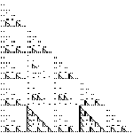
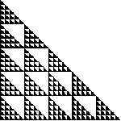

2. (mod 5) Shading the boxes of Pascal's triangle with numbers congruent to
|  |  |  |  |
| 0 (mod 5) | 1 (mod 5) | 2 (mod 5) | 3 (mod 5) |
|  |  |
| 4 (mod 5) | 1, 2, 3, or 4 (mod 5) |
| Because 5 is prime, Z5 has no proper subgroups. |
| Consequently, there are no nontrivial cosets or quotient groups. |
Return to Other Mod Exercises.